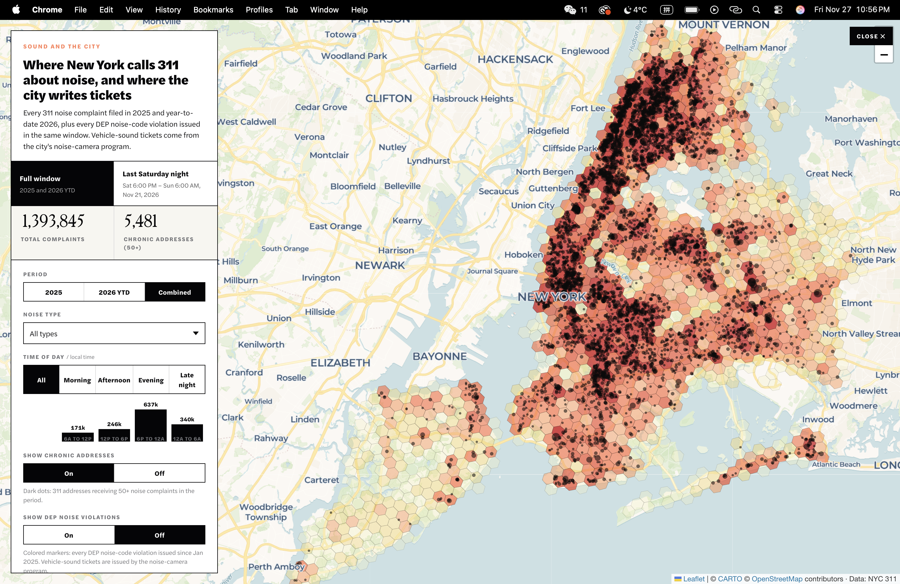
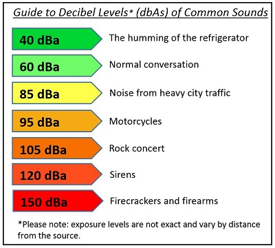

Week 11 — Ideation & Prototyping
Creative Inquiry — Part III
Engage + Collect / Build a Field Archive
Disruptive Sounds in New York City
Building upon my previous field research around Times Square, this phase focuses on expanding my understanding of disruptive sounds through conversations, public resources, and the curation of collected materials. Since I am away from New York this week, I decided to continue my inquiry remotely and explore perspectives beyond my own experience of the city.
01
Public Resource Research
First, I search for some public resources related to NYC noises to expand my understanding of disruptive sounds beyond my personal field observations. I was particularly interested in how urban noise is reported, measured, and defined.
Reported Noise — NYC Noise Complaints

Looking at the distribution of noise complaints throughout the day, I noticed that the evening has the highest number of complaints, followed by late night, while the morning has the lowest. This pattern aligns with my personal experience of living in New York. I often feel that the city becomes noticeably noisier after around 6 PM.
However, I wonder whether the increase in complaints necessarily means that the city becomes louder during these hours, or whether people are actually paying more attention to noises after the day. During the evening, people may return home expecting to rest and recover from their daily activities. For me, I focus on classes or I was hanging out with my friends over the day. The noise still exists according to my memory, but maybe I was just too focused to feel "disrupted". Therefore, sound that feels acceptable during the daytime might become disruptive when it interrupts someone's personal time.
This made me realize that noise complaints do not simply document the presence of sound. They also reveal the relationship between sound, people's daily routines, and their expectations of the surrounding environment.
Measured Noise — Decibels and Human Perception

I investigated how noise was measured in a scientific approach. To understanding noise, people categorize sounds by by measuring sound levels in decibels (dB). This provides a quantitative framework for comparing sound intensity and evaluating potentially harmful levels of noise exposure.
However, I think that the human experience of disruptive sound cannot be fully explained through decibel measurements. A relatively quiet but sudden sound may feel irratating, while a much louder sound, but constant, might be just like asmr, because the listener might get used to it.
Factors such as repetition, predictability, familiarity, personal associations, and the ability to control or escape a sound may be just as important to our perception of disruption as its physical intensity.
This led me to question the gap between scientifically measured sound and subjectively experienced noise. To further investigate this relationship, I decided to interview New York residents and explore how disruptive sounds are experienced in everyday life.
02
Interview with New York Residents
I interviewed a New York resident who lives around noisy area to explore the relationship between disruptive sounds and people's everyday experiences of the city. I was particularly interested in how personal experiences and individual perceptions might influence what people consider disruptive.
FIELD ARCHIVE / INTERVIEW 01
Perceptions of Urban Noise
Interview Findings
Through this interview, I realized that the boundary between sound and noise is not fixed but constantly changes depending on people's experiences, emotions, and relationships with their surroundings. The interviewee mentioned that ambulance sirens used to irritate her when she first moved to New York, but she gradually became accustomed to them and can now sleep through them. Interestingly, the physical characteristics of these sounds may not have changed, but her perception of them has. Another interesting point is that she described construction noise as something that makes her feel restless and irritated. This means that what makes a sound disruptive is not necessarily its loudness, but its ability to interfere with someone's emotional state and everyday activities. A sound changes it meaning when it changes our mood, it could therefore be understood as a relationship between an individual and their environment rather than an inherent quality of sound itself.
"Noise is what makes New York New York," This quote from my interviewee also made me think about the unique characteristic of New York. Back to our question, although disruptive sounds can cause discomfort, they are also traces of human activities and contribute to the identity of a city. If all disruptive sounds disappeared, New York might become more comfortable to live in, but it might also lose part of its vitality and recognizable character. I think our project could investigate how artistic reinterpretation might change people's emotional relationships with everyday urban noise.
03
Connections & Emerging Patterns
04
Curated Field Archive
05
Directions for Experimentation
01 — Visualizing Disruption
I'm curious about: How disruptive sounds can be translated into visual language.
I could experiment with: Using color, shape, movement, and texture to represent different sonic experiences.
02 — Sensory Overload
I'm curious about: How the accumulation of sounds creates a sense of discomfort or overwhelm.
I could experiment with: Gradually layering visual elements to create a visual experience of disruption.
03 — From Noise to Rhythm
I'm curious about: Whether rhythm and predictability can change our perception of noise.
I could experiment with: Rearranging recorded urban sounds into rhythmic compositions and corresponding visual patterns.
06